Unknown types can be solved
In an unannotated procedure, the parameter type is not initially known. Assign a fresh type variable, inspect how the parameter is used, and collect equations describing what must be true. This separates constraint generation from constraint solving.
For example, proc x (x + 1) begins with x : α. Addition generates α = int; the result is int, so the whole procedure is int → int.

View Mermaid source
flowchart TD
accTitle: A step-by-step reasoning flow
accDescr: Each arrow passes the result of one reasoning step to the next.
N0["Invent fresh unknowns<br/>Give unconstrained parameters and results<br/>type variables."]
N1["Walk the AST<br/>Translate each typing rule into equations."]
N0 --> N1
N2["Unify the equations<br/>Find a substitution satisfying all<br/>relationships."]
N1 --> N2
N3["Apply the substitution<br/>Resolve the provisional result type<br/>everywhere."]
N2 --> N3
A complete worked example
Consider proc f (proc x (f (x + 1))). Give f type α, x type β, and the call result type γ.
| Source of constraint | Equation | Reason |
|---|---|---|
x + 1 |
β = int | Addition consumes integers |
f (x + 1) |
α = int → γ | f accepts the addition result |
| Outer structure | provisional type α → β → γ | Two nested procedures |
Substituting the solved equations gives (int → γ) → int → γ. γ remains free because no operation constrains f’s result. Different fresh variable names denote the same type structure.
Assign α to f and β to x. Addition forces β = int. The call forces α = int → γ. The result is (int → γ) → int → γ.
Unification is a worklist algorithm
At each step inspect one equation after applying substitutions already learned.

View Mermaid source
flowchart TD
accTitle: What shapes appear on the two sides?
accDescr: Select the branch that matches the current case.
Q{"What shapes appear on the two sides?"}
Q -->|"Identical types"| N0["Discard the equation; it is already<br/>satisfied."]
Q -->|"Same type constructor"| N1["Decompose functions into domain/result<br/>equations and lists into element<br/>equations."]
Q -->|"Variable versus type"| N2["Bind the variable only if it does not<br/>occur inside the other type."]
Q -->|"Different constructors"| N3["Reject: no substitution can make int and<br/>bool equal."]
For function types, (A → B) = (C → D) creates two equations, A = C and B = D. For list types, List A = List B creates A = B. Do not confuse type equations with subtyping; this chapter’s unification requires equality.
The occurs check prevents infinite simple types
Trying to solve α = α → β would make α contain itself. No finite type in the course’s simple type grammar can satisfy this equation. The occurs check detects the occurrence of α inside the proposed replacement and rejects it.
The expression proc x (x x) produces exactly this kind of problem: x must be both an argument and a function accepting that same argument type. Untyped lambda calculus can represent the expression; this simple type system rejects it.
Substitution must reach inside types
If S1 = {α ↦ β} and S2 = {β ↦ int}, applying S2 after S1 maps α to int. Merely concatenating maps and looking up α once may leave β unresolved. Define substitution application recursively through function and list constructors, and define composition consistently.
apply S (A → B) = apply S A → apply S B
apply S (List A) = List (apply S A)
apply (S2 after S1) T = apply S2 (apply S1 T)
Choose one direction for composition and document it in helper names. The final type must receive the fully composed substitution, not just the last binding discovered.
Step by step · Watch earlier bindings change as equations are solved
Suppose the remaining equations are α = β → γ, β = int, and γ = bool.

View Mermaid source
%%{init: {"flowchart": {"wrappingWidth": 800}}}%%
flowchart TD
accTitle: Compose substitutions through earlier function types
accDescr: Binding beta and gamma must update the earlier arrow assigned to alpha, and the final substitution must update the result type.
A["1. α = β → γ"] --> B["2. β = int: α becomes int → γ"]
B --> C["3. γ = bool: α becomes int → bool"]
C --> D["4. S(α → β) = (int → bool) → int"]
The final substitution is S = {α ↦ int → bool, β ↦ int, γ ↦ bool}. Each new binding updates earlier types; the diagram shows those normalized results. An implementation may store chains instead, provided apply follows them consistently and rejects cycles. The original PDF uses the mathematical composition convention explained in §8.6.2's solver trace.
To generate the equations in the first place, read V(Γ, e, t) as “the constraints that make e have requested type t under Γ.” The complete eight-case table connects that notation to literals, variables, addition, tests, conditionals, let, procedures, and calls. List constraints are a later extension for Fun/ML−.
The homework connection
HW4 needs fresh variables, equations for every AST constructor, and a unifier over unit, integers, booleans, arrows, lists, and variables. Recursive procedures require assuming provisional function types while checking their bodies; mutual recursion requires both provisional bindings at once.
Useful tests: a valid higher-order call, a mismatched function argument, an inconsistent branch pair, a list with incompatible element types, a substitution chain, and self-application. The assignment’s equality operator also needs an admissible-type check beyond ordinary unification.
Check your understanding
Why must you apply the current substitution before performing a later occurs check?
Reveal the reasoning
A variable may already expand to a type containing another variable. For example, after α = β → int, the proposed binding β = α contains β indirectly. Looking only at the unreplaced name α would miss the cycle.
Read alongside: lecture 15, pp. 4–10, lecture 16, pp. 4–7, lecture 17, pp. 16 and 21–26, English book, §8.6.